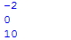

chapter.02 - 수와 문자의 표현
프로그램 안에서는 수많은 데이터를 처리하고 가공합니다.
프로그램을 시작할 때 가장 먼저 접하는 'Hello World' 출력하기~
#예제2.1
print ("Hello World")
위의 예제도 Hello World라는 문자열로 이루어진 data라고 할 수 있다.
프로그래밍 언어에서는 데이터를 형태에 따라 분류하는 데
파이썬 언어의 데이터 타입 중에서 가장 기본적인 '수'와 '문자'를 어떻게 표현하는 지
알아봐요.
1.문자의 표현
파이썬에서 문자는 큰 따옴표(")나 작은 따옴표로(')로 둘러싸서 표현합니다.
#예제2.2
print ("A")
print ('Python is simple')
#여제2.3
print ("Hi, 'Python'")
만약에 (') 한가지만 사용한다면 [Hi,'Python']이라는 문자열을 표현하는데 어려움이 있을 꺼에요.
두가지를 사용하므로써 (')대신 (")로 문자열을 둘러싸서 표현할 수 있게 되죠.
파이썬에는 여러줄의 문자열을 표현할 수 있는 방법이 있어요.
*이스케이프코드 사용
문자열 안에 [\n]을 삽입하는 방법이에요.
#예제2.4
print ("Python is simple\nPython is powerful\nPython is smart")
*Escape Code - 문자열 안에서 사용가능한 일종의 특수 문자 입니다.
대표적인 파이썬 이스케이프 코드는 다음과 같다
| \n | 줄바꿈 |
| \t | 탭 |
| \b | 백스페이스(<-) |
| \' | 작은따옴표(') |
| \" | 큰 따옴표(") |
2. 수의 표현
파이썬에서 수는 따옴표 없이 나타냅니다.
#예제2.5
print (1)
print (10)
print (100)
(1)정수
파이썬에서는 -2,0,10과 같은 정수를 int라 합니다. int는 integer(정수)의 앞글자이다.
#예제2.6
print (-2)
print (0)
print (10)

(2)실수
파이썬에서는 0.1, 3.0, 1.333과 같은 실수를 float라 합니다.
float는 floating-point(부동소수점)의 앞글자입니다.
#예제2.7
print (0.1)
print (3.0)
print (4.0/3.0)
**참고
파이썬에서는 문자(Character)와 문자열(String)을 구분하지 않습니다.
그래서 문자열을 만들기 위해 배열이나 포인터를 사용할 필요가 없습니다.
파이썬에서는 데이터 타입의 크기를 따로 구분하지 않아 아무리 큰수라도 int형이면 충분합니다.
<출처> 점프 투 파이썬, 박응용(https://wikidocs.net/book/1)